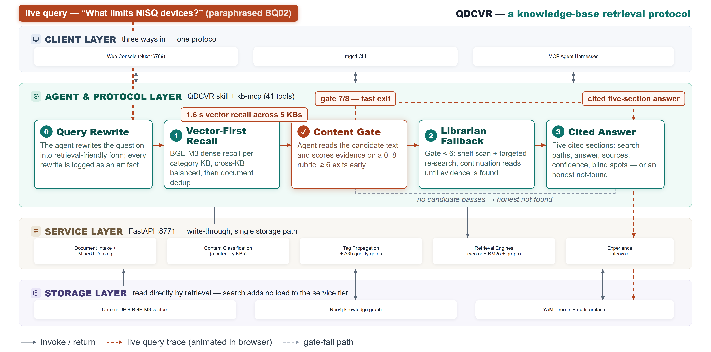

A deployable knowledge-base platform: documents organized by what they say, every retrieval verified by reading it, every answer cited to part and section — or an honest not-found.
vague ask → retrieval-shaped query · query rewrite
vector-first over routed category bases · balance_kbs guard
read the text, score 0–8 · topic 3 · scenario 3 · evidence 2
gate-fail → librarian re-search + continuation reads · the one gate-fail was saved here
nothing passes → not-found report · 3/3 probes honest, zero fabrication
five sections: paths · answer · sources · confidence · blind spots
on-target · top-1 gold 10/10 · part & section citations · ≈1.6 s recall + 0.8 s reads
no section trace · 78.8 s average
no source paths · 12.2 s average
